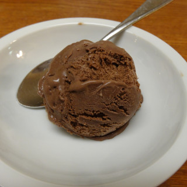

Chocolate Gelato

Description
This is a super-chocolaty Italian-style ice cream - gelato; use the best ingredients possible, because it really makes a difference. I use 70% chocolate for it.
Ingredients
- 2¼ cups whole milk
- ⅝ cup white sugar, divided
- ⅓ cup heavy cream
- ⅓ cup unsweetened cocoa powder
- ⅔ cup chopped dark chocolate
- 4 egg yolks
Steps
- Heat milk, 1/2 the sugar, and cream in a heavy saucepan until simmering and sugar is dissolved, about 5 minutes, being careful not to scorch the milk. Remove milk from heat and whisk in cocoa powder and dark chocolate. Allow to cool slightly.
- Meanwhile, beat egg yolks and remaining sugar in a large bowl using a whisk or electric beater until thick and pale yellow. Add about 1 cup of the slightly cooled chocolate mixture in a slow stream to avoid cooking eggs, whisking constantly until well combined. Add the rest of the chocolate mixture and return to the saucepan over medium-low heat. Stir constantly until thickened enough to coat the back of a spoon, about 5 minutes more.
- Strain custard through a sieve into a bowl and cover with plastic wrap touching to mixture to prevent a skin from forming. Refrigerate 8 hours to overnight.
- Pour cold custard into an ice cream maker and freeze according to manufacturer's instructions, about 20 minutes. Transfer to an airtight container and freeze until hardened, about 1 hour.